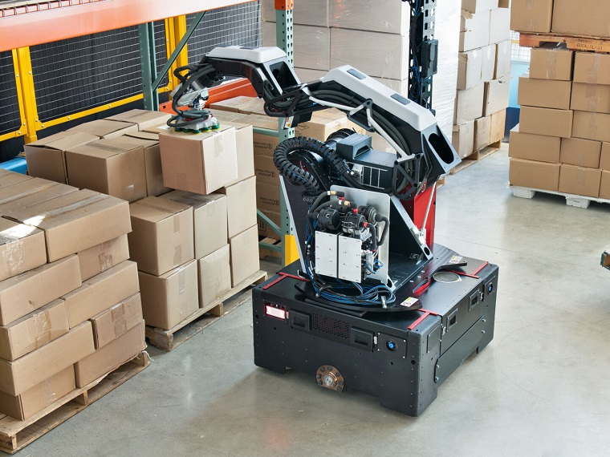

Робототехника

Boston Dynamics представила нового коммерческого робота, предназначенного для работы на складах. Робот Stretch может перемещать до 800 коробок в час, что сравнимо с работой сотрудника-человека. Stretch установлен на квадратной мобильной базе, оснащен колесами, «мачтой восприятия» с камерами и другими датчиками, а также роборукой с семью степенями свободы, которая может захватывать и перемещать коробки весом до 23 кг. Stretch — это первый робот Boston Dynamics, который был специально построен для складских помещений. Существует множество стационарных робоманипуляторов, но их минус заключается в дорогостоящей установке, необходимости переделывать инфраструктуру склада и моделировать рабочий процесс вокруг робота. Stretch, напротив, обеспечит автоматизацию среды там, где для этого нет подходящей инфраструктуры. Робота можно отправить в кузов грузовика, в проходы склада или к конвейерам. Мобильность позволяет Stretch выполнять работу в соответствии с потребностями склада без необходимости что-либо переделывать или устанавливать. Как отмечают в Boston Dynamics, Stretch даст компании возможность сотрудничать с клиентами, автоматизация склада для которых была бы слишком дорогой или времязатратной. На сегодня 80% складов в мире не имеют возможности автоматизации с использованием стационарных роботов, что дает компании значительный доступный рынок.